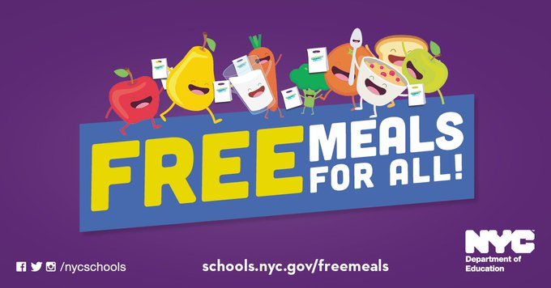
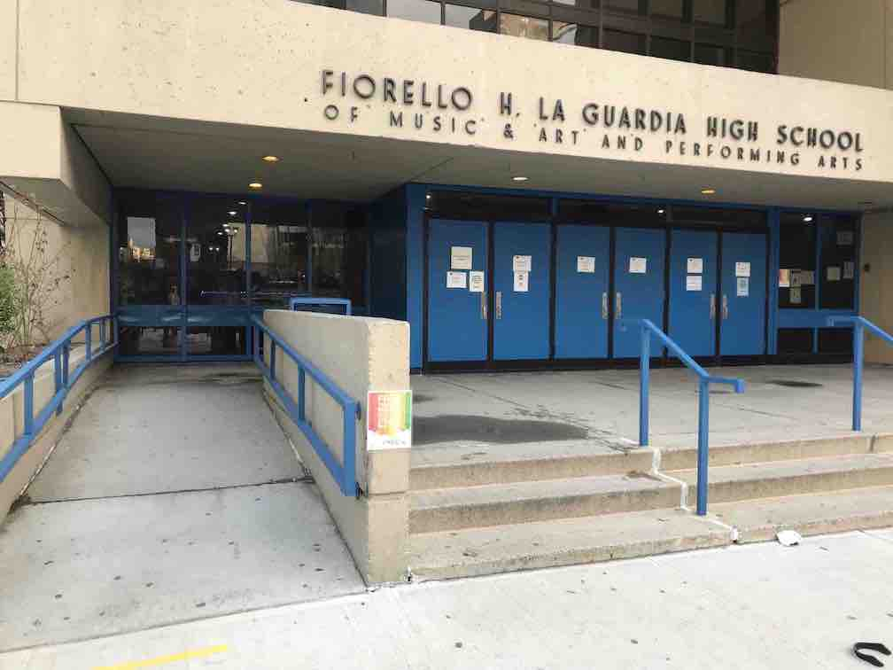
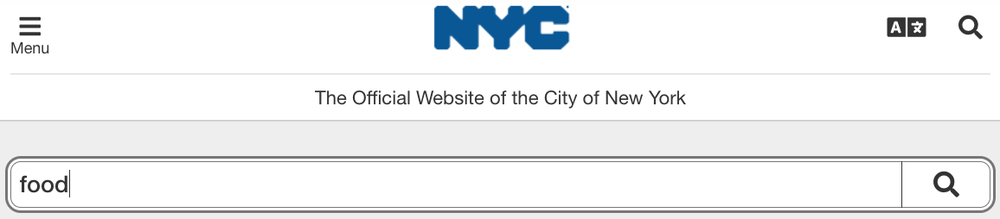
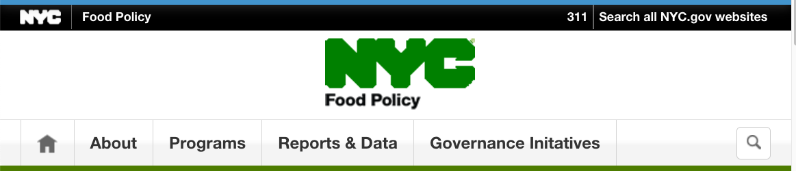

Restaurant review: New York Grab & Go
New York City offers free meals to everybody. How’s the food?
Origin
Nonprofits in New York City have been giving free food to the poor since the late 1700s.
But a year ago the City itself began offering free meals to every human being in New York—universal single-payer food. Mayor Bill de Blasio appointed a COVID-19 Food Czar
, Kathryn Garcia, to create, operationalize and oversee a structure for working New Yorkers to get the food they need during this pandemic
. Within days, under the auspices of this GetFoodNYC
program, the city’s Department of Education was dispensing Grab & Go
meals, gratis, at almost 500 locations to any and all comers. Show up, choose from the menu, and take as many meals as you want, no questions asked.
The Grab & Go program was not fundamentally distinct from a major restaurant chain, especially during the take-out era, except that it was government-run and the meals were free. By June 2020, the mayor said it was providing about a half million meals per weekday, while a companion program was delivering about a million meals per day. According to the food czar, about 30 food providers, restaurants, caterers, farms, [and] consorti[a]
were participating.
In the food czar’s words, it was essential that every meal is healthy, and meets and exceeds the minimum requirements for protein, for vegetables, for grains, doesn't contain too many calories, or too much sodium
, and is not expired
. She also said nothing should go to waste
. Finally, It’s very important that you are getting something that you will eat.
A year later, in March 2021, Grab & Go is still operational.
Business model
The target consumer population has been variously described:
ALL
(Department of Education)All New Yorkers.
(Department of Education)All children or adults in need
(GetFoodNYC)Working New Yorkers
(mayor)A half million New Yorkers who lost their job as a result of COVID-19
(mayor)Everyone
(mayor)Anyone who needs food
(ABC News)All who need it
(NYC Food Policy, by email)
So, sources differ. Is Grab & Go a fixed-sum resource that is unethical to deplete unless you are hurting? Or does it, like public education, depend on participation by rich and poor alike to avoid degradation? Or are you, by not taking meals from it, causing those meals to enter the food-waste stream? There is merit to each of those claims.
Results
The food czar acknowledged faults reported by officials and journalists and said improvements had been made in response. She insisted that good enough is not good enough. We want to continue to strive to make our program better, and we want to hold ourselves, and our food providers, to the highest expectations.
But let’s be frank: Something that you will eat
is not the highest expectation for restaurant food. Successful dining establishments aim to provide meals that you adore and rave about. They would be devastated if reviewers wrote I was willing to eat it
.
So, how successful has Grab & Go been in achieving its (ambiguously ambitious) mission—and do the meals rise above mere edibility?
The program was evaluated in July 2020 by the city’s Independent Budget Office. Its report ignored food quality. It dealt only with access and volume. The findings: Grab & Go locations were well placed for low-income neighborhood penetration and proximity to students, but patronage was too low to satisfy more than a fraction of the need.
What fraction? That depends on the target market. If it was all New Yorkers, then Grab & Go plus the delivery program would be achieving about 6% of the expected volume. If it was only New Yorkers in poverty, the success rate would increase to about 24%, but only if (unrealistically) 100% of the meals were consumed by people in poverty.
Given the price ($0.00), why the weak demand? One possible cause is the schedule: Grab & Go is open for business 10 hours per week! Yes, you must arrive between 3 and 5 p.m. on a weekday (except when the schedule has been changed to start at noon and end at 3 p.m. or service has been canceled because of expected inclement weather). Impractical if, as the mayor originally claimed, the target customers are working New Yorkers
.
One example
A Grab & Go location on the Upper West Side illustrates the weak demand. It is one block from the thousand-unit low- and moderate-income Amsterdam Houses, but the foot traffic is barely noticeable.
Any effort to boost the customer flow? No. There are no banners, sign spinners, beacons, barkers, sandwich boards, email blasts, snail-mail flyers, or search ads. Just an inconspicuous door label, adjacent to five other door labels. A barely legible sign at the sidewalk advertises meals, but only for public-school students, so a passer-by could easily conclude that no meals for the public are available. NYC Food Policy says (by email) We make all efforts no raise awareness about our feeding sites
, but meager
might be a more accurate adjective than all
.

If you are curious enough to ascend the stairs or ramp and approach the doors, there is a GRAB & GO MEALS
label on one door, but it says nothing more. What is a Grab & Go meal? Who is entitled to it? What does it cost? When can you get it? Not disclosed.
If you are even more assertive, and digitally astute, you visit the official website of the City of New York to learn about help with food. You click the search icon and enter food
.

The hits on the next page are sorted by relevance, and the first hit is NYC Food
. That looks promising, so you click it. What appears? Oops: the dreaded 404 page.

If you are stratospherically persistent, you surmise that the URL was a typo, and nycfoods should really have been nycfood. So you delete the s and try again. Voilà! You get the website of NYC Food Policy.

You continue navigating. With seasoned guesses, you successively click Programs
, then Food Assistance & Access
, then Emergency Food
, then FoodHelp.nyc Food Map
. That produces an interactive map of food sources, including Grab & Go meals. If you can understand several paragraphs of instructions (such as Set the buffer distance
) and maneuver on a web map tool, you can find a Grab & Go location near you and learn when it is open. Even then, the instructions say Grab & Go meals at NYC schools
, tempting you to misinterpret them as student-only meals. The map also contains inaccuracies (such as a Western Beef grocery store that closed two months ago) and no method for reporting errors.
So, Grab & Go is not stamped TOP SECRET
, but the barriers to awareness and access are formidable. No surprise that Trader Joe’s has lines two blocks long, while Grab & Go (at least in the observed location) has none.
Food
Still, the food itself might make Grab & Go (as we used to say) go viral. Is it convenient, varied, fresh, delicious, nutritious, and environmentally benign? Is it appealing enough to generate word-of-mouth fame and influencer peddling that could fill the publicity void? Or do customers, after trying the meals, advise their friends and relatives not to bother?
Grab & Go publishes a bit of information about the meals. It says that vegetarian, Halal, and Kosher meals are available at some or all locations. It also lists items that may
be offered, namely Baked Ravioli, Beef Burgers, Burrito (Southwest), Buttermilk Biscuits, Buttermilk Pancakes, Chicken (Oven-Roasted & Sliders), Fish Patty, French Fries, Garlic Toast, Grilled Cheese, Jamaican Beef Patty, Mac & Cheese, Mozzarella Sticks, Omelet, Pizza, Stuffed Shells, Turkey (Oven-Roasted and Breakfast Sausage Patty) and Waffles
.
Without actually inspecting the meals, this list might make you wonder whether the meals include fruits and (except for french fries
and garlic
) vegetables.
Let’s kill the suspense by addressing the question that the Independent Budget Office chose not to ask: How’s the food?
Convenient?

This good news is also bad news:
- You can choose among meals, but you have no choice about the components. Without exception, the beverage in every meal is milk: sometimes plain, sometimes chocolate; sometimes fresh, sometimes boxed ultra-high-temperature (UHT); sometimes low-fat, sometimes no-fat. If you have dietary restrictions or strong preferences, no single meal is likely to conform to them.
- The meals are packages of packages of food, and sometimes even packages of packages of packages of food. Getting through the packaging to the food itself can require body-builder strength or sharp utensils.
- A spoon is not optimal for some of the ingredients (such as french fries).
Varied?
Grab & Go does, indeed, offer a choice of meals, including, as mentioned earlier, vegetarian, Kosher, and Halal meals. But each of those categories usually describes exactly one meal, so there is little intra-category variety. No meal complies with veganism, and none of the components is organic, so not all dietary disciplines are accommodated.
Breakfasty main dishes rotate among dry cereal, bagels with cream cheese, mini-waffles, and occasionally banana bread. You can usually choose among lunch and supper main dishes such as beef, turkey and cheese, and peanut butter and jelly sandwiches, hamburgers, bean and cheese burritos, bagel pizza, and hummus with pretzels.


Along with the main dishes come fruits, usually apple slices or apple-and-peach sauce, or fruit juices, usually grape, apple and pear, orange, or orange and tangerine.
While this variety might at first seem adequate, the vegetables exhibit shocking monotony. Once in a blue moon you find cherry tomatoes, chickpeas, white or red or green beans, or french fries in the bag. But, in about 9 out of 10 meals, the only vegetable is Bolthouse Farms baby carrots. Nothing leafy or cruciferous, ever. No cabbage, spinach, avocado, radish, onion, cauliflower, squash, eggplant, or olives, to name a few omissions. The advice of the Dietary Guidelines for Americans, 2020–2025, to eat Vegetables of all types—dark green; red and orange; beans, peas, and lentils; starchy; and other vegetables
does not seem to have guided the meal planners.

chicken with broccoli
. It turned out to be chicken with french fries. This is not uncommon. When you ask what the meals contain, you may get inaccurate answers.
Fresh?
The interior packaging is often imprinted with best-by or sell-by dates. The components are always not yet expired. But the time until expiration varies greatly, from a day to months. Only on rare occasions does a non-expired product, such as milk or hummus, go bad.
So, in terms of shelf-life, the food is fresh. In the fresh-produce
sense, though, freshness is in short supply.
Delicious?
The taste of almost everything in a Grab & Go meal is mild—others would say simple, plain, or bland. That is not a complaint. There is no risk of over-adulteration. No need to worry about excessive pepper, ginger, or cilantro. Some meals include pouches of mustard and/or mayonnaise, but otherwise you provide your own spices. The jalapeño-laced burritos are the exception.
Taste-wise, the meals avoid offense. Conversely, they avoid excitement. Adjectives like succulent
and exquisite
just don’t apply.
Nutritious?
The kitchen-packaged food seems wholesome, and the factory-labeled food is strong on whole-grain, no-sugar-added, low-salt virtues.
Some of the food is factory-packaged, but not labeled for individual sale, so discovering the ingredients requires research. The Cabo Primo burritos, for example, are identified only with a faint stock code 71674
. While the manufacturer does not admit to using that code, the Missouri Department of Elementary and Secondary Education fully documents that product, reassuring you, for example, that it satisfies the Whole Grain-Rich Criteria of the National School Lunch Program.
Environmentally benign?
In the packaging-waste epidemic exacerbated by the COVID-19 pandemic, Grab & Go is partly to blame. Its strategy of embedded packaging wastes plastic in two ways:
- Each meal is housed in a half-dozen packages, including even a plastic sleeve wrapping the spoon and napkin.
- The food is packaged in portion sizes. So, if you are going to grab a week’s supply of meals, they will likely include about 7 plastic pouches of sliced apples, each 2 ounces, or roughly a third of an apple. Since most customers presumably arrive with their own bags, Grab & Go could instead hand over 2 or 3 whole apples, with zero packaging, while also avoiding the environmental damage arising from the manufacturing process. Mini-packages could also be replaced by multi-serving packages of milk, bagels, breakfast cereal, cheese, and so on.
The strategy of whole-meal bundling likewise produces waste:
- Not everybody is willing and able to eat everything. If you exhibit lactose malabsorption, a condition that the Mayo Clinic says is
most common in people of African, Asian, Hispanic and American Indian descent
and that affects an estimated 36% of the United States population (add another 2% for vegans), you will need to shun all that milk, and you will not know whether the unlabeled cheese slices are safe for you. - Packaging every meal with a napkin may be innocuous, but a plastic spoon? A spoon lasts longer than one meal. The spoons are labeled
compostable
, but that is greenwashing. - The components vary greatly in shelf life. The regular milk is good for a few days, but the pretzels last for months. If any component reaches the end of its useful life, the whole meal is discarded.
- Visit a location on a Friday afternoon shortly before closing time, and you may see dozens of meals not yet claimed. Ask what will happen to them, and the answer varies. I have been told (1) they will all be trashed, (2) some will be trashed but others can be distributed the next week, and (3) all will be trashed unless the Friday afternoon
lady
shows up to take away what is left.
Bundling by restaurants is common, of course, but they can claim each dish is a work of culinary art with chef-calibrated ingredients. Grab & Go cannot make that claim. So why the bundling? Possible motivations:
- Paternalism: People will generally eat what you give them, so give them a balanced meal instead of free choice. Otherwise they might walk off with a shopping bag full of hamburgers and nothing else.
- Logistics: We want people to
grab
meals andgo
, with a minimum of interpersonal contact. À-la-carte selection would slow distribution and put all participants at greater risk of illness.
Bottom line
Grab & Go is, arguably, a noble experiment in a universal human right to food, but it does not seem to have been designed as an experiment. That would have entailed, for example, varying the methods of promotion, the days and hours of operation, the meal formats, and the share of prefab versus kitchen-prepared food, while measuring popularity, satisfaction, nutrition outcomes, and waste.
Instead of rigorous studies, then, we New Yorkers can learn lessons from this project and apply them in advocacy and action. How? Eat! If you didn’t before, you now know that this restaurant chain exists and when it is open. With effort, you can find a location on the (above-linked) map. The super-friendly (and at times lonely) staff will welcome you. If you have moral qualms, go late on Friday and rescue some meals from the dump.
And, especially if you know New Yorkers who suffer from food insecurity, spread the word.